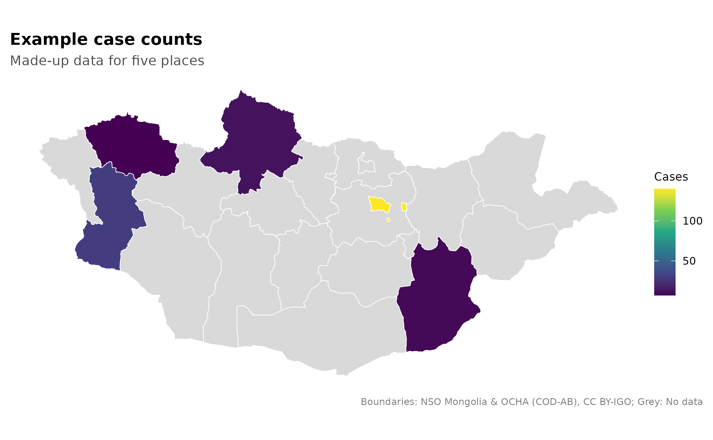
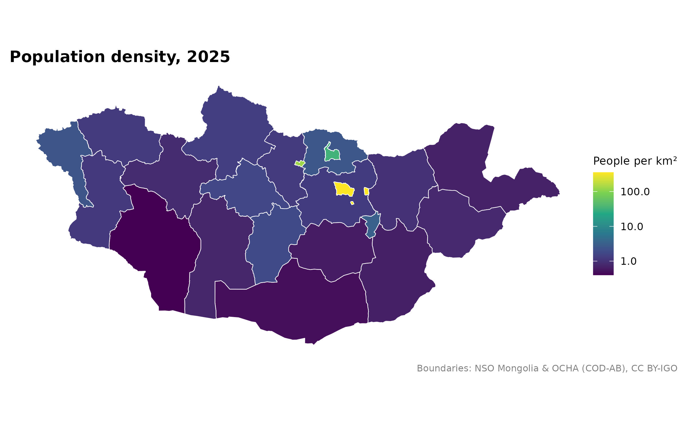
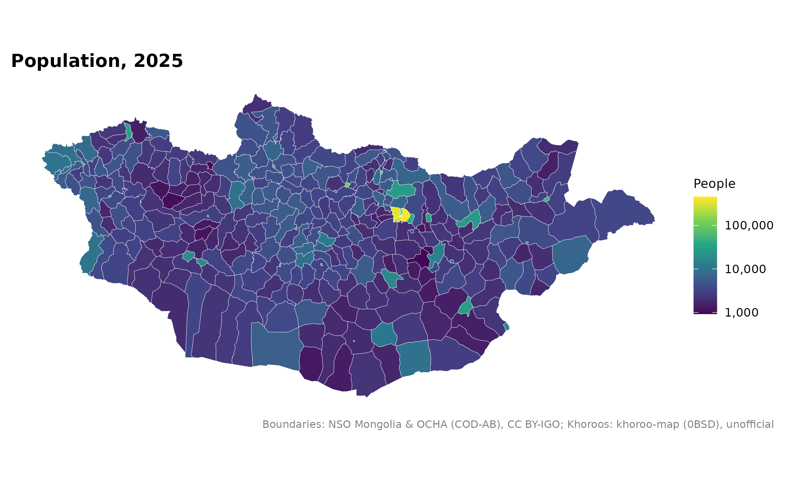
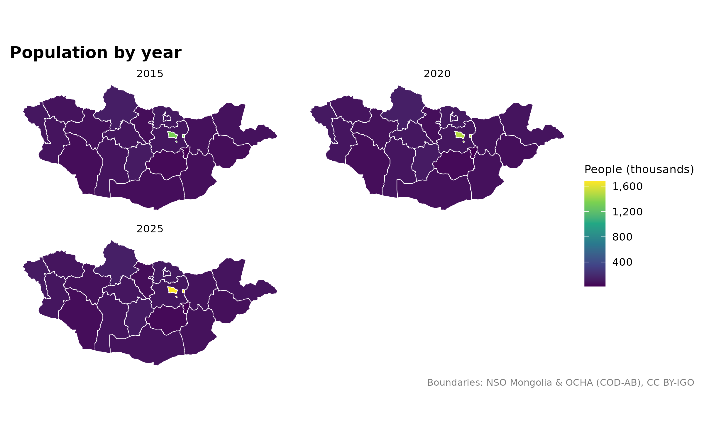

Use mn_join() to attach a table to boundaries, then
mn_map() to draw the result. These examples use data
included in the package.
Start with a small table
This made-up case table uses several common spellings. Supply one row per place. Prefer official codes when your table has them.
cases <- data.frame(
aimag = c("Khovsgol", "Hovd", "Увс", "Ulan Bator", "Dornogobi"),
cases = c(12, 30, 7, 140, 9)
)
cases_map <- mn_join(cases, by = "aimag", level = "aimag")
mn_map(cases_map, fill = cases, title = "Example case counts") +
labs(fill = "Cases", subtitle = "Made-up data for five places")
Every aimag stays in the map. Grey means no observation was provided.
Use 0 for a measured zero and NA for a missing
value. These are counts; compare rates only after adding suitable
denominators.
Join an NSO table by code
National Statistics Office (NSO) tables often mix country totals,
regions, aimags and smaller units. Join by the code column, usually
Region, and choose the level you need.
mn_join() leaves out rows for other levels.
pop_2025 <- mn_example_population[mn_example_population$Year == 2025, ]
aimag_pop <- mn_join(pop_2025, by = "Region", level = "aimag")
mn_map(aimag_pop, fill = value / area_km2, trans = "log10",
title = "Population density, 2025") +
labs(fill = "People per km²")
A logarithmic colour scale helps when a few places have much higher values. Legend labels still show the original units. The same table has soum and district population:
soum_pop <- mn_join(pop_2025, by = "Region", level = "soum")
mn_map(soum_pop, fill = value, trans = "log10", title = "Population, 2025") +
labs(fill = "People")
Compare years
Declare the columns that identify each observation, such as
Year, in strata. Each boundary then appears
once per year, including places with missing data. The panels below
share one colour scale.
pop_years <- mn_join(mn_example_population, by = "Region", level = "aimag",
strata = "Year", value_cols = "value")
mn_map(pop_years, fill = value / 1000, title = "Population by year") +
facet_wrap(~Year, ncol = 2) +
labs(fill = "People (thousands)")
Also declare age group, sex or other columns that define a distinct
observation. Use strict = TRUE to stop if a place and group
combination appears more than once.
Handle repeated soum names
Several soums can share a name. Use by_parent to
identify the aimag for each row, or within if all rows
belong to the same aimag.
herders <- data.frame(
aimag = c("Dornod", "Govi-Altai", "Khentii"),
soum = c("Bayan-Uul", "Bayan-Uul", "Bayan-Adarga"),
herders = c(820, 640, 910)
)
joined <- mn_join(herders, by = "soum", level = "soum", by_parent = "aimag")
knitr::kable(sf::st_drop_geometry(joined)[
!is.na(joined$herders), c("name", "aimag_pcode", "herders")
])| name | aimag_pcode | herders |
|---|---|---|
| Bayan-Uul | MN21 | 820 |
| Bayan-Adarga | MN23 | 910 |
| Bayan-Uul | MN82 | 640 |
These herder counts are made up to show the join.
Check your matches
Review how each input row was handled. Row numbers refer to your original table.
knitr::kable(mn_join_audit(cases_map)[c("row", "x", "pcode", "status", "action")])| row | x | pcode | status | action |
|---|---|---|---|---|
| 1 | Khovsgol | MN67 | exact | joined |
| 2 | Hovd | MN84 | exact | joined |
| 3 | Увс | MN85 | exact | joined |
| 4 | Ulan Bator | MN11 | exact | joined |
| 5 | Dornogobi | MN44 | exact | joined |
To inspect possible matches, use
mn_match("Bayan-Uul", level = "soum", details = TRUE). A
close spelling is not proof of the right place. See Check joins and compare maps for
stricter checks and Ulaanbaatar’s region and capital codes.
Download a fresh NSO table
The optional mongolstats package downloads NSO tables. This recipe needs internet access and a working NSO API, so it is not run when building this guide. Check the table’s dimensions before changing selections.
library(mongolstats)
tbl <- "DT_NSO_0300_002V4"
regions <- nso_dim_values(tbl, "Region")$code
years <- nso_dim_values(tbl, "Year", labels = "en")
latest <- max(as.integer(years$code), na.rm = TRUE)
pop <- nso_data(tbl, selections = list(Region = regions, Year = as.character(latest)),
labels = "en")
mn_map(mn_join(pop, by = "Region", level = "aimag"), fill = value) +
ggplot2::labs(fill = "People")